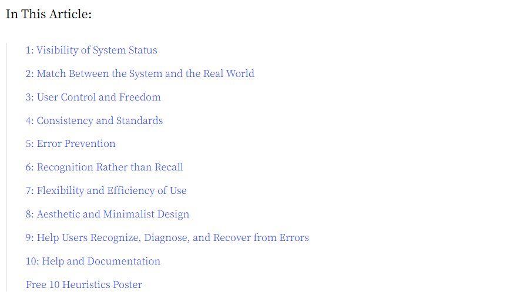

The ten heuristics
For this course, we learnt about the ten website usability heuristics.
These ten guidelines help website companies ensure that their users have good experiences on their website.
Though often they don't always follow these conventions, so it makes it hard for users and the companies
to use properly.
We had a whole mid year exam on this.